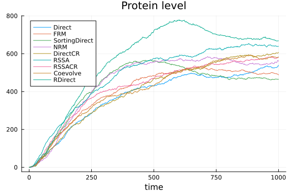
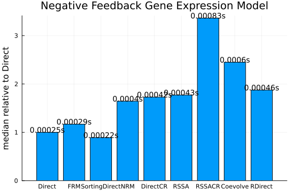

Negative Feedback Gene Expression Model
using DiffEqBase, DiffEqJump, DiffEqProblemLibrary, Plots, Statistics
using DiffEqProblemLibrary.JumpProblemLibrary: importjumpproblems; importjumpproblems()
import DiffEqProblemLibrary.JumpProblemLibrary: prob_jump_dnarepressor
gr()
fmt = :png:pngPlot solutions by each method
methods = (Direct(),DirectFW(),FRM(),FRMFW(),SortingDirect(),NRM(),DirectCR(),RSSA())
shortlabels = [string(leg)[12:end-2] for leg in methods]
prob = prob_jump_dnarepressor.discrete_prob
tf = prob_jump_dnarepressor.tstop
rn = prob_jump_dnarepressor.network
ploth = plot(reuse=false)
for (i,method) in enumerate(methods)
jump_prob = JumpProblem(rn, prob, method, save_positions=(false, false))
sol = solve(jump_prob, SSAStepper(), saveat=tf/1000.)
plot!(ploth,sol.t,sol[3,:],label=shortlabels[i], format=fmt)
end
plot(ploth, title="Protein level", xlabel="time",format=fmt)
p = []
for (i,method) in enumerate(methods)
jump_prob = JumpProblem(rn, prob, method, save_positions=(false, false))
sol = solve(jump_prob, SSAStepper(), saveat=tf/1000.)
push!(p, plot(sol,title=shortlabels[i],leg=false,format=fmt))
end
plot(p...,format=fmt)
Benchmarking performance of the methods
function run_benchmark!(t, jump_prob, stepper)
sol = solve(jump_prob, stepper)
@inbounds for i in 1:length(t)
t[i] = @elapsed (sol = solve(jump_prob, stepper))
end
endrun_benchmark! (generic function with 1 method)nsims = 500
benchmarks = Vector{Vector{Float64}}()
for method in methods
jump_prob = JumpProblem(rn, prob, method, save_positions=(false, false))
stepper = SSAStepper()
t = Vector{Float64}(undef,nsims)
run_benchmark!(t, jump_prob, stepper)
push!(benchmarks, t)
endmedtimes = Vector{Float64}(undef,length(methods))
stdtimes = Vector{Float64}(undef,length(methods))
avgtimes = Vector{Float64}(undef,length(methods))
for i in 1:length(methods)
medtimes[i] = median(benchmarks[i])
avgtimes[i] = mean(benchmarks[i])
stdtimes[i] = std(benchmarks[i])
end
println(medtimes/medtimes[1])[1.0, 0.9918244821873892, 1.144601117022609, 1.1506656696232105, 0.86656195
32510653, 1.434408017374317, 1.6905664900373176, 1.6197060391494598]using DataFrames
df = DataFrame(names=shortlabels,medtimes=medtimes,relmedtimes=(medtimes/medtimes[1]),avgtimes=avgtimes, std=stdtimes, cv=stdtimes./avgtimes)
sa = [text(string(round(mt,sigdigits=2),"s"),:center,10) for mt in df.medtimes]
bar(df.names,df.relmedtimes,legend=:false, fmt=fmt)
scatter!(df.names, .05 .+ df.relmedtimes, markeralpha=0, series_annotations=sa, fmt=fmt)
ylabel!("median relative to Direct")
title!("Negative Feedback Gene Expression Model")
Appendix
These benchmarks are a part of the SciMLBenchmarks.jl repository, found at: https://github.com/SciML/SciMLBenchmarks.jl. For more information on high-performance scientific machine learning, check out the SciML Open Source Software Organization https://sciml.ai.
To locally run this benchmark, do the following commands:
using SciMLBenchmarks
SciMLBenchmarks.weave_file("benchmarks/Jumps","NegFeedback_GeneExpr.jmd")Computer Information:
Julia Version 1.6.5
Commit 9058264a69 (2021-12-19 12:30 UTC)
Platform Info:
OS: Linux (x86_64-pc-linux-gnu)
CPU: AMD EPYC 7502 32-Core Processor
WORD_SIZE: 64
LIBM: libopenlibm
LLVM: libLLVM-11.0.1 (ORCJIT, znver2)
Environment:
BUILDKITE_PLUGIN_JULIA_CACHE_DIR = /cache/julia-buildkite-plugin
JULIA_DEPOT_PATH = /cache/julia-buildkite-plugin/depots/5b300254-1738-4989-ae0a-f4d2d937f953
Package Information:
Status `/cache/build/exclusive-amdci3-0/julialang/scimlbenchmarks-dot-jl/benchmarks/Jumps/Project.toml`
[479239e8] Catalyst v6.13.0
[a93c6f00] DataFrames v1.1.1
[2b5f629d] DiffEqBase v6.62.2
[c894b116] DiffEqJump v6.14.2
[a077e3f3] DiffEqProblemLibrary v4.13.0
[961ee093] ModelingToolkit v5.19.1
[1dea7af3] OrdinaryDiffEq v5.57.0
[91a5bcdd] Plots v1.16.5
[31c91b34] SciMLBenchmarks v0.1.0
[10745b16] StatisticsAnd the full manifest:
Status `/cache/build/exclusive-amdci3-0/julialang/scimlbenchmarks-dot-jl/benchmarks/Jumps/Manifest.toml`
[c3fe647b] AbstractAlgebra v0.17.1
[1520ce14] AbstractTrees v0.3.4
[79e6a3ab] Adapt v3.3.1
[ec485272] ArnoldiMethod v0.1.0
[4fba245c] ArrayInterface v3.1.17
[4c555306] ArrayLayouts v0.7.0
[aae01518] BandedMatrices v0.16.9
[8e7c35d0] BlockArrays v0.15.3
[ffab5731] BlockBandedMatrices v0.10.6
[00ebfdb7] CSTParser v2.5.0
[479239e8] Catalyst v6.13.0
[d360d2e6] ChainRulesCore v0.9.45
[35d6a980] ColorSchemes v3.12.1
[3da002f7] ColorTypes v0.11.0
[5ae59095] Colors v0.12.8
[861a8166] Combinatorics v1.0.2
[a80b9123] CommonMark v0.8.1
[38540f10] CommonSolve v0.2.0
[bbf7d656] CommonSubexpressions v0.3.0
[34da2185] Compat v3.30.0
[b152e2b5] CompositeTypes v0.1.2
[8f4d0f93] Conda v1.5.2
[187b0558] ConstructionBase v1.2.1
[d38c429a] Contour v0.5.7
[a8cc5b0e] Crayons v4.0.4
[9a962f9c] DataAPI v1.6.0
[a93c6f00] DataFrames v1.1.1
[864edb3b] DataStructures v0.18.9
[e2d170a0] DataValueInterfaces v1.0.0
[2b5f629d] DiffEqBase v6.62.2
[c894b116] DiffEqJump v6.14.2
[9fdde737] DiffEqOperators v4.28.0
[a077e3f3] DiffEqProblemLibrary v4.13.0
[163ba53b] DiffResults v1.0.3
[b552c78f] DiffRules v1.0.2
[b4f34e82] Distances v0.10.3
[31c24e10] Distributions v0.24.18
[ffbed154] DocStringExtensions v0.8.5
[e30172f5] Documenter v0.26.3
[5b8099bc] DomainSets v0.5.2
[da5c29d0] EllipsisNotation v1.1.0
[d4d017d3] ExponentialUtilities v1.8.4
[e2ba6199] ExprTools v0.1.3
[c87230d0] FFMPEG v0.4.1
[7034ab61] FastBroadcast v0.1.8
[9aa1b823] FastClosures v0.3.2
[1a297f60] FillArrays v0.11.7
[6a86dc24] FiniteDiff v2.8.0
[53c48c17] FixedPointNumbers v0.8.4
[59287772] Formatting v0.4.2
[f6369f11] ForwardDiff v0.10.18
[069b7b12] FunctionWrappers v1.1.2
[28b8d3ca] GR v0.57.5
[5c1252a2] GeometryBasics v0.3.12
[d7ba0133] Git v1.2.1
[42e2da0e] Grisu v1.0.2
[cd3eb016] HTTP v0.9.10
[eafb193a] Highlights v0.4.5
[0e44f5e4] Hwloc v2.0.0
[7073ff75] IJulia v1.23.2
[b5f81e59] IOCapture v0.1.1
[615f187c] IfElse v0.1.0
[d25df0c9] Inflate v0.1.2
[83e8ac13] IniFile v0.5.0
[8197267c] IntervalSets v0.5.3
[41ab1584] InvertedIndices v1.0.0
[c8e1da08] IterTools v1.3.0
[42fd0dbc] IterativeSolvers v0.9.1
[82899510] IteratorInterfaceExtensions v1.0.0
[692b3bcd] JLLWrappers v1.3.0
[682c06a0] JSON v0.21.1
[98e50ef6] JuliaFormatter v0.13.7
[b964fa9f] LaTeXStrings v1.2.1
[2ee39098] LabelledArrays v1.6.1
[23fbe1c1] Latexify v0.15.6
[5078a376] LazyArrays v0.21.6
[d7e5e226] LazyBandedMatrices v0.5.8
[093fc24a] LightGraphs v1.3.5
[d3d80556] LineSearches v7.1.1
[2ab3a3ac] LogExpFunctions v0.2.4
[bdcacae8] LoopVectorization v0.12.37
[1914dd2f] MacroTools v0.5.6
[a3b82374] MatrixFactorizations v0.8.3
[739be429] MbedTLS v1.0.3
[442fdcdd] Measures v0.3.1
[e1d29d7a] Missings v1.0.0
[961ee093] ModelingToolkit v5.19.1
[46d2c3a1] MuladdMacro v0.2.2
[ffc61752] Mustache v1.0.10
[d41bc354] NLSolversBase v7.8.0
[2774e3e8] NLsolve v4.5.1
[872c559c] NNlib v0.7.21
[77ba4419] NaNMath v0.3.5
[8913a72c] NonlinearSolve v0.3.8
[6fe1bfb0] OffsetArrays v1.9.2
[bac558e1] OrderedCollections v1.4.1
[1dea7af3] OrdinaryDiffEq v5.57.0
[90014a1f] PDMats v0.11.1
[d96e819e] Parameters v0.12.2
[69de0a69] Parsers v1.1.0
[ccf2f8ad] PlotThemes v2.0.1
[995b91a9] PlotUtils v1.0.10
[91a5bcdd] Plots v1.16.5
[e409e4f3] PoissonRandom v0.4.0
[f517fe37] Polyester v0.3.1
[2dfb63ee] PooledArrays v1.2.1
[21216c6a] Preferences v1.2.2
[08abe8d2] PrettyTables v1.1.0
[1fd47b50] QuadGK v2.4.1
[fb686558] RandomExtensions v0.4.3
[e6cf234a] RandomNumbers v1.4.0
[3cdcf5f2] RecipesBase v1.1.1
[01d81517] RecipesPipeline v0.3.2
[731186ca] RecursiveArrayTools v2.11.4
[f2c3362d] RecursiveFactorization v0.1.12
[189a3867] Reexport v1.1.0
[ae029012] Requires v1.1.3
[79098fc4] Rmath v0.7.0
[7e49a35a] RuntimeGeneratedFunctions v0.5.2
[476501e8] SLEEFPirates v0.6.21
[1bc83da4] SafeTestsets v0.0.1
[0bca4576] SciMLBase v1.13.5
[31c91b34] SciMLBenchmarks v0.1.0
[6c6a2e73] Scratch v1.1.0
[efcf1570] Setfield v0.7.0
[992d4aef] Showoff v1.0.3
[699a6c99] SimpleTraits v0.9.3
[b85f4697] SoftGlobalScope v1.1.0
[a2af1166] SortingAlgorithms v1.0.0
[47a9eef4] SparseDiffTools v1.13.2
[276daf66] SpecialFunctions v1.5.1
[aedffcd0] Static v0.2.5
[90137ffa] StaticArrays v1.2.2
[82ae8749] StatsAPI v1.0.0
[2913bbd2] StatsBase v0.33.8
[4c63d2b9] StatsFuns v0.9.8
[7792a7ef] StrideArraysCore v0.1.13
[69024149] StringEncodings v0.3.4
[09ab397b] StructArrays v0.5.1
[d1185830] SymbolicUtils v0.11.3
[0c5d862f] Symbolics v0.1.32
[3783bdb8] TableTraits v1.0.1
[bd369af6] Tables v1.4.3
[8290d209] ThreadingUtilities v0.4.4
[a759f4b9] TimerOutputs v0.5.9
[0796e94c] Tokenize v0.5.16
[a2a6695c] TreeViews v0.3.0
[5c2747f8] URIs v1.3.0
[3a884ed6] UnPack v1.0.2
[1986cc42] Unitful v1.8.0
[3d5dd08c] VectorizationBase v0.20.16
[81def892] VersionParsing v1.2.0
[19fa3120] VertexSafeGraphs v0.1.2
[44d3d7a6] Weave v0.10.9
[ddb6d928] YAML v0.4.7
[c2297ded] ZMQ v1.2.1
[700de1a5] ZygoteRules v0.2.1
[6e34b625] Bzip2_jll v1.0.6+5
[83423d85] Cairo_jll v1.16.0+6
[5ae413db] EarCut_jll v2.1.5+1
[2e619515] Expat_jll v2.2.10+0
[b22a6f82] FFMPEG_jll v4.3.1+4
[a3f928ae] Fontconfig_jll v2.13.1+14
[d7e528f0] FreeType2_jll v2.10.1+5
[559328eb] FriBidi_jll v1.0.10+0
[0656b61e] GLFW_jll v3.3.5+0
[d2c73de3] GR_jll v0.57.3+0
[78b55507] Gettext_jll v0.20.1+7
[f8c6e375] Git_jll v2.31.0+0
[7746bdde] Glib_jll v2.59.0+4
[e33a78d0] Hwloc_jll v2.4.1+0
[aacddb02] JpegTurbo_jll v2.1.0+0
[c1c5ebd0] LAME_jll v3.100.1+0
[dd4b983a] LZO_jll v2.10.1+0
[dd192d2f] LibVPX_jll v1.10.0+0
[e9f186c6] Libffi_jll v3.2.2+0
[d4300ac3] Libgcrypt_jll v1.8.7+0
[7e76a0d4] Libglvnd_jll v1.3.0+3
[7add5ba3] Libgpg_error_jll v1.42.0+0
[94ce4f54] Libiconv_jll v1.16.1+0
[4b2f31a3] Libmount_jll v2.35.0+0
[89763e89] Libtiff_jll v4.3.0+0
[38a345b3] Libuuid_jll v2.36.0+0
[e7412a2a] Ogg_jll v1.3.5+0
[458c3c95] OpenSSL_jll v1.1.10+0
[efe28fd5] OpenSpecFun_jll v0.5.5+0
[91d4177d] Opus_jll v1.3.2+0
[2f80f16e] PCRE_jll v8.44.0+0
[30392449] Pixman_jll v0.40.1+0
[ea2cea3b] Qt5Base_jll v5.15.2+0
[f50d1b31] Rmath_jll v0.3.0+0
[a2964d1f] Wayland_jll v1.17.0+4
[2381bf8a] Wayland_protocols_jll v1.18.0+4
[02c8fc9c] XML2_jll v2.9.12+0
[aed1982a] XSLT_jll v1.1.34+0
[4f6342f7] Xorg_libX11_jll v1.6.9+4
[0c0b7dd1] Xorg_libXau_jll v1.0.9+4
[935fb764] Xorg_libXcursor_jll v1.2.0+4
[a3789734] Xorg_libXdmcp_jll v1.1.3+4
[1082639a] Xorg_libXext_jll v1.3.4+4
[d091e8ba] Xorg_libXfixes_jll v5.0.3+4
[a51aa0fd] Xorg_libXi_jll v1.7.10+4
[d1454406] Xorg_libXinerama_jll v1.1.4+4
[ec84b674] Xorg_libXrandr_jll v1.5.2+4
[ea2f1a96] Xorg_libXrender_jll v0.9.10+4
[14d82f49] Xorg_libpthread_stubs_jll v0.1.0+3
[c7cfdc94] Xorg_libxcb_jll v1.13.0+3
[cc61e674] Xorg_libxkbfile_jll v1.1.0+4
[12413925] Xorg_xcb_util_image_jll v0.4.0+1
[2def613f] Xorg_xcb_util_jll v0.4.0+1
[975044d2] Xorg_xcb_util_keysyms_jll v0.4.0+1
[0d47668e] Xorg_xcb_util_renderutil_jll v0.3.9+1
[c22f9ab0] Xorg_xcb_util_wm_jll v0.4.1+1
[35661453] Xorg_xkbcomp_jll v1.4.2+4
[33bec58e] Xorg_xkeyboard_config_jll v2.27.0+4
[c5fb5394] Xorg_xtrans_jll v1.4.0+3
[8f1865be] ZeroMQ_jll v4.3.2+6
[3161d3a3] Zstd_jll v1.5.0+0
[0ac62f75] libass_jll v0.14.0+4
[f638f0a6] libfdk_aac_jll v0.1.6+4
[b53b4c65] libpng_jll v1.6.38+0
[a9144af2] libsodium_jll v1.0.20+0
[f27f6e37] libvorbis_jll v1.3.7+0
[1270edf5] x264_jll v2020.7.14+2
[dfaa095f] x265_jll v3.0.0+3
[d8fb68d0] xkbcommon_jll v0.9.1+5
[0dad84c5] ArgTools
[56f22d72] Artifacts
[2a0f44e3] Base64
[ade2ca70] Dates
[8bb1440f] DelimitedFiles
[8ba89e20] Distributed
[f43a241f] Downloads
[7b1f6079] FileWatching
[9fa8497b] Future
[b77e0a4c] InteractiveUtils
[b27032c2] LibCURL
[76f85450] LibGit2
[8f399da3] Libdl
[37e2e46d] LinearAlgebra
[56ddb016] Logging
[d6f4376e] Markdown
[a63ad114] Mmap
[ca575930] NetworkOptions
[44cfe95a] Pkg
[de0858da] Printf
[3fa0cd96] REPL
[9a3f8284] Random
[ea8e919c] SHA
[9e88b42a] Serialization
[1a1011a3] SharedArrays
[6462fe0b] Sockets
[2f01184e] SparseArrays
[10745b16] Statistics
[4607b0f0] SuiteSparse
[fa267f1f] TOML
[a4e569a6] Tar
[8dfed614] Test
[cf7118a7] UUIDs
[4ec0a83e] Unicode
[e66e0078] CompilerSupportLibraries_jll
[deac9b47] LibCURL_jll
[29816b5a] LibSSH2_jll
[c8ffd9c3] MbedTLS_jll
[14a3606d] MozillaCACerts_jll
[efcefdf7] PCRE2_jll
[83775a58] Zlib_jll
[8e850ede] nghttp2_jll
[3f19e933] p7zip_jll